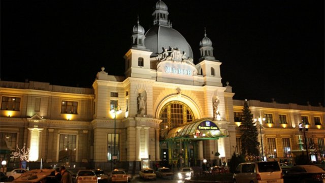
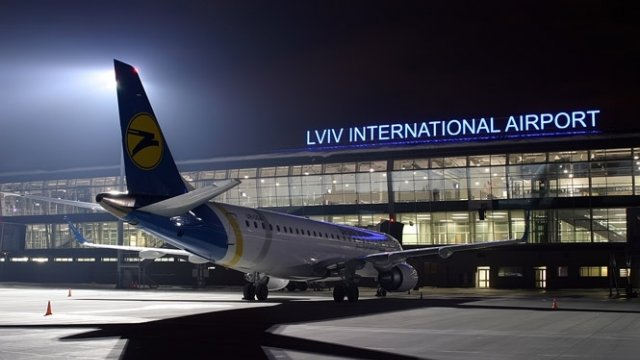
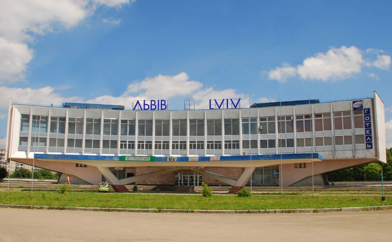

History
The city was founded in 1256 by King Danylo. He named it in honor of his son, Lev.
At different times it was part of Polish Kingdom, Austro- Hungarian Empire, USSR... In 1991 it's became a part of independent Ukraine.
Nowadays the city is populated by 800 thousands inhabitants and its historical center was added to the UNESCO World Heritage in 1998. It presents a high diversity of architecture including Eastern European, Italian and German, but also Gothic, renaissance, baroque, classic styles and Art Nouveau and Art Deco styles.
How to get here?
By rail
Lviv has been able to receive trains since 1861 and can boast one of the oldest railways in Ukraine. In that year the railroad construction was finished, and the first train arrived to Lviv from Vienna on November 4, 1861.
By air
Lviv Airport is situated on Lyubinska Street just 7 km from the city centre. Lviv has established air service with 14 European countries, with main destinations including Frankfurt, Warsaw, Naples, Rome, Lisbon, Bratislava, Moscow, Kyiv, etc.
By bus
You can get to Lviv by bus from almost every place in Europe or Ukraine.
By car
If you travel to Lviv by your own car, it will be best for you to follow E-40 International Highway (from the western border to Lviv it is M-11 Ukrainian Highway, and from Kyiv it is M-06).